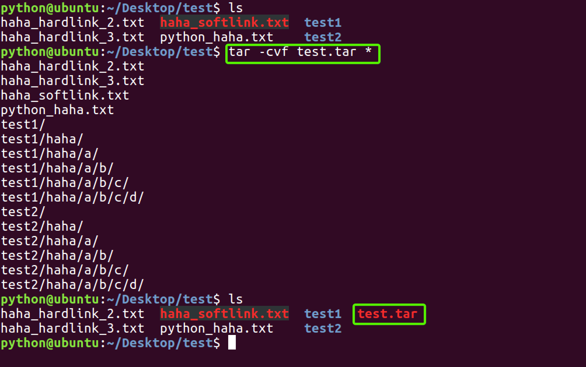

<17>归档管理：tar
计算机中的数据经常需要备份，tar是Unix/Linux中最常用的备份工具，此命令可以把一系列文件归档到一个大文件中，也可以把档案文件解开以恢复数据。
tar使用格式 tar [参数] 打包文件名 文件
tar命令很特殊，其参数前面可以使用“-”，也可以不使用。
常用参数：
参数 | 含义 |
-c | 生成档案文件，创建打包文件 |
-v | 列出归档解档的详细过程，显示进度 |
-f | 指定档案文件名称，f后面一定是.tar文件，所以必须放选项最后 |
-t | 列出档案中包含的文件 |
-x | 解开档案文件 |
注意：除了f需要放在参数的最后，其它参数的顺序任意。

<18>文件压缩解压：gzip
tar与gzip命令结合使用实现文件打包、压缩。 tar只负责打包文件，但不压缩，用gzip压缩tar打包后的文件，其扩展名一般用xxxx.tar.gz。
gzip使用格式如下：
gzip [选项] 被压缩文件
常用选项：
选项 | 含义 |
-d | 解压 |
-r | 压缩所有子目录 |
tar这个命令并没有压缩的功能，它只是一个打包的命令，但是在tar命令中增加一个选项(-z)可以调用gzip实现了一个压缩的功能，实行一个先打包后压缩的过程。
压缩用法：tar cvzf 压缩包包名 文件1 文件2 ...
-z ：指定压缩包的格式为：file.tar.gz

解压用法： tar zxvf 压缩包包名
-z:指定压缩包的格式为：file.tar.gz

解压到指定目录：-C （大写字母“C”）

<19>文件压缩解压：bzip2
tar与bzip2命令结合使用实现文件打包、压缩(用法和gzip一样)。
tar只负责打包文件，但不压缩，用bzip2压缩tar打包后的文件，其扩展名一般用xxxx.tar.bz2。
在tar命令中增加一个选项(-j)可以调用bzip2实现了一个压缩的功能，实行一个先打包后压缩的过程。
压缩用法：tar -jcvf 压缩包包名 文件...(tar jcvf bk.tar.bz2 *.c)
解压用法：tar -jxvf 压缩包包名 (tar jxvf bk.tar.bz2)
<20>文件压缩解压：zip、unzip
通过zip压缩文件的目标文件不需要指定扩展名，默认扩展名为zip。
压缩文件：zip [-r] 目标文件(没有扩展名) 源文件
解压文件：unzip -d 解压后目录文件 压缩文件

<21>解压到指定目录 用-C 注意是大写

<22>查看命令位置：which

作业：
1、在桌面创建01文件夹、在01文件下创建02.py 03.py 04.niu test.html i.c文件。并已通配符的形式把02.py 03.py 04.niu归档名为test.tar。并解压到02(01下)文件夹下。
并把test.html和i.c文件 归档并压缩到03(01下)文件夹下。并用biz2归档压缩到04文件夹下（01下）并把01文件夹 02文件夹 03文件夹重定向到1.txt。自己在练习练习zip unzip
2、用find查找任何目录 查找名字为bin开头用find查找任何目录 查找名字为sh结尾或开头
用find查找任何目录，查找大于5M小于10M的文件